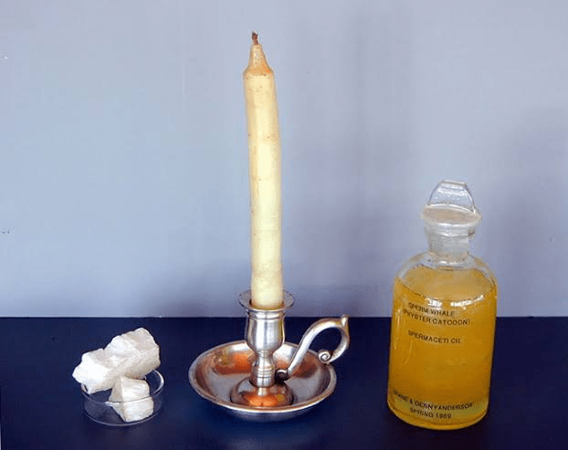
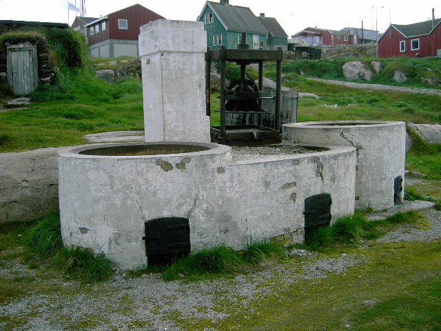

El aceite de ballena es el aceite obtenido de la grasa de diversas especies de cetáceos. El aceite de ballena más importante es el espermaceti que se obtiene de los cachalotes.

El aceite de ballena es químicamente una cera líquida y no es un aceite. Es claro y fluye fácilmente. Varía de color desde el amarillo brillante al marrón oscuro, de acuerdo a la calidad de la grasa de la que ha sido extraído. La estearina y el espermaceti pueden ser separados del aceite de ballena a bajas temperaturas (por debajo de 0 °C). Estos componentes pueden ser cristalizados casi en su totalidad.
El primer uso del aceite de ballena fue como combustible de lámparas y como cera de la vela. Fue una importante fuente de alimento para los pueblos indígenas del Pacífico al noroeste, como el Nootka. Fue el primer aceite animal o mineral en lograr viabilidad comercial, muy utilizado como lubricante, en la fabricación de margarinas y en la base de pinturas antioxidantes. El declive en su uso comenzó con el desarrollo del queroseno a partir del carbón en 1846 y el descubrimiento de petróleo en perforaciones, a finales del siglo XIX, que llevó al reemplazo de los aceites de ballenas en la mayoría de aplicaciones no alimentarias. En 1986, la Comisión Ballenera Internacional estableció una moratoria sobre la caza comercial de cetáceos, lo que ocasionó que el aceite de ballena dejara de ser un producto viable. Como sustituto para la mayoría de sus usos se emplea el aceite de jojoba.